[Medium subtitle, optional: Migrating Declarative Automation Bundles from the Terraform engine to the direct engine, and what can break along the way]
My team uses an old version of the Databricks CLI. We have to migrate our Declarative Automation Bundles from the Terraform engine to the direct engine. (Yes, Declarative Automation Bundles is the new name for Databricks Asset Bundles. If you blinked, you missed the rename. The good news: they're still DABs.) And if we upgrade the CLI, the migration happens on its own, on the next deploy. Before that happens, I want to understand what actually changes with this migration and what can break. So I dug into how both engines work.
TL;DR: For most job settings, the two engines behave the same, even when you remove a field. The direct engine is faster and doesn't need to download Terraform. The real risk is a value that only the workspace remembers: the Terraform engine leaves it alone, and the first deploy on the direct engine resets it to the default without a warning. bundle plan -o json shows it before it happens.
If you only came for the migration, jump to the checklist near the end: "What I'd check before migrating a real bundle". It's a list of things to look at before you plan, not a migration plan, so treat it as a starting point for your own.
A short timeline (this is the only bit of history here, no worries):
According to the official documentation, the Databricks CLI has been a single Go binary since version 0.205 (a looooong time ago, in September 2023). Both engines live inside that binary. The difference is what the binary calls next.
The Terraform engine, obviously, uses Terraform. By default, it requires Terraform version 1.5.5 and runs it together with the Databricks Terraform provider. On deploy, the CLI first looks for Terraform. If it doesn't find a matching version, it downloads that exact Terraform version into a private bin folder in the bundle's cache, under .databricks/ in your project. It doesn't use or touch any Terraform you might have installed system-wide. Terraform then fetches the Databricks Terraform provider the same way.
The exception is restricted networks. In an air-gapped environment, the automatic download fails, so you download Terraform and the provider manually and point the CLI to them with the DATABRICKS_TF_* environment variables. The versions you declare there have to match the ones the CLI expects. One air-gapped user wrote in a GitHub issue that installing Terraform was fine, but installing the provider offline was cumbersome.
I ran the databricks bundle debug terraform command to check which Terraform and provider versions the Databricks CLI will use.
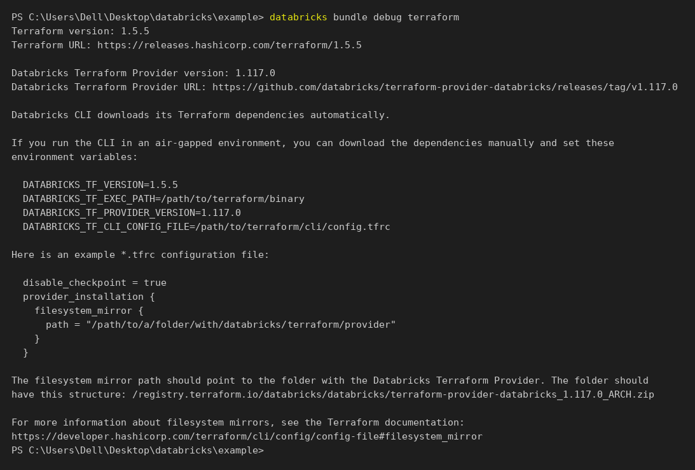
The direct engine calls the APIs directly. (The name gives it away.) Neither Terraform nor the Databricks Terraform provider is needed. According to the Databricks documentation, bundle deployments are up to 40% faster. Both paths in one picture:
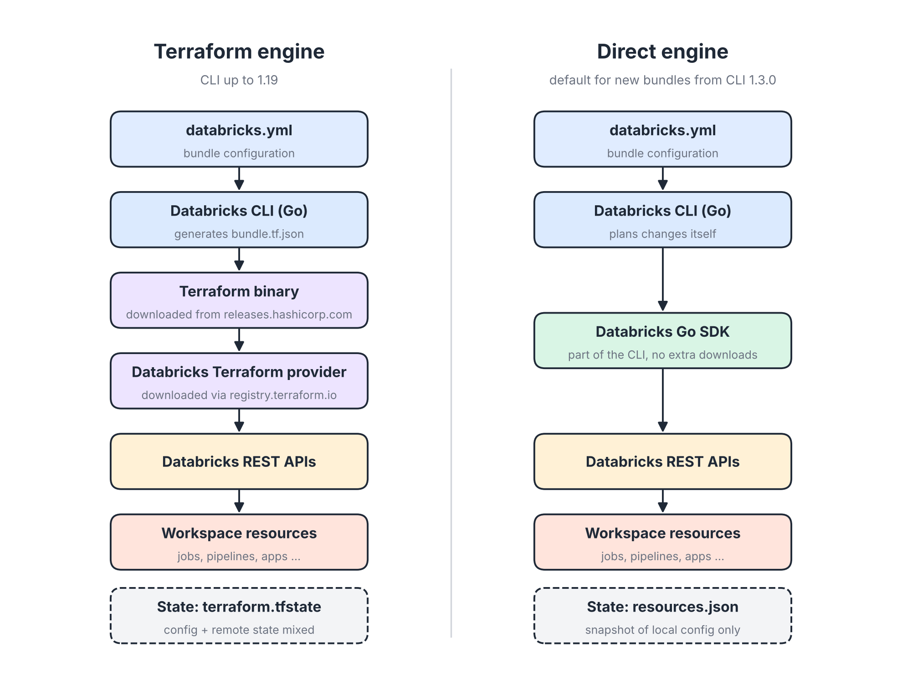
Before touching anything at work, I wanted a safe place to break things. So I built the smallest bundle that mimics our real bundles. It contains one job and one Python package. The job runs a Python wheel task, and on every deploy the bundle builds the wheel for my_module with uv build. The job runs on serverless, so there's no cluster config to deal with. The whole example is on GitHub: agmorka/databricks-bundle-engines.
My bundle has two identical targets, tf and direct, one for each engine. Each target keeps its own state under .databricks/bundle/<target>/, so I can deploy the same job with both engines and put the results side by side. CLI version 1.2.1 already includes the direct engine, so I picked the engine per command with an environment variable (in PowerShell; in bash, it's DATABRICKS_BUNDLE_ENGINE=direct databricks bundle deploy -t direct):
https://gist.github.com/agmorka/63392a1677216de9c1e518cb3d3355cd
I also turned the project folder into a Git repository with git init. That's what makes the experiments easy to follow. The CLI keeps its deployment state in a hidden .databricks/ folder inside the project. If I commit after every deploy, git diff shows how each deploy changed those files. (There's one catch: by default, Git doesn't see these files at all. I'll explain why after the first deploy.)
The plan:
tf with the Terraform engine, direct with the direct engine. Then compare the state files locally and in the workspace.tf target to the direct engine.The bundle structure:
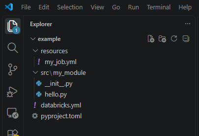
databricks.yml defines the bundle, the wheel artifact and the two targets:
https://gist.github.com/agmorka/2eae02d753a8e6c8960687da3f855845
resources/my_job.yml defines the job:
https://gist.github.com/agmorka/702833a6034cdffa75c7af6765c5eb17
Notes on the config:
artifacts block tells the CLI to build the wheel with uv build before every deploy. The result lands in the dist/ folder of the project.../dist/*.whl dependency points the job to that wheel. On every deploy, the CLI uploads the wheel to the workspace and rewrites the path, so the job uses the uploaded copy. That's why the wheel shows up among the deployed files, and why the path in the state files looks different from the one in my YAML.mode: development deploys everything to your user folder, and presets.name_prefix replaces its default [dev <your user>] prefix with [tf <your user>] or [direct <your user>]. That's how I tell the two copies of the job apart in the workspace. (The username has to stay in the prefix: with mode: development, bundle validate refuses a prefix without it, so two developers can't overwrite each other's jobs.)my_job is how the job is identified in the deployment state: in bundle.tf.json and terraform.tfstate for the tf target, and in the direct engine's state file for the direct target. Watch for it in the diffs.Before deploying anything, I validated the bundle.
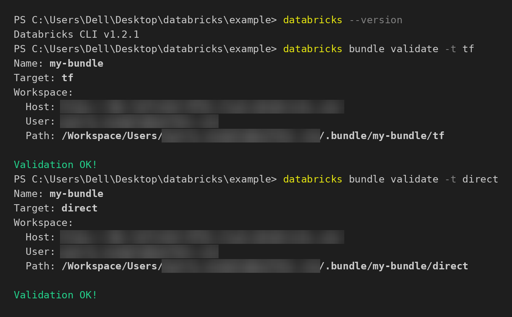
I deployed the same bundle twice: first to the tf target with the default Terraform engine, then to the direct target with DATABRICKS_BUNDLE_ENGINE=direct. After each deploy, I committed everything, so each commit holds what one engine created.
Both engines print the same deployment log. First, the CLI builds the wheel. Then it uploads all bundle files, including the wheel, to the workspace. Finally, it deploys the resources and updates the deployment state. Compare the two logs below: apart from the target name, the lines are the same.
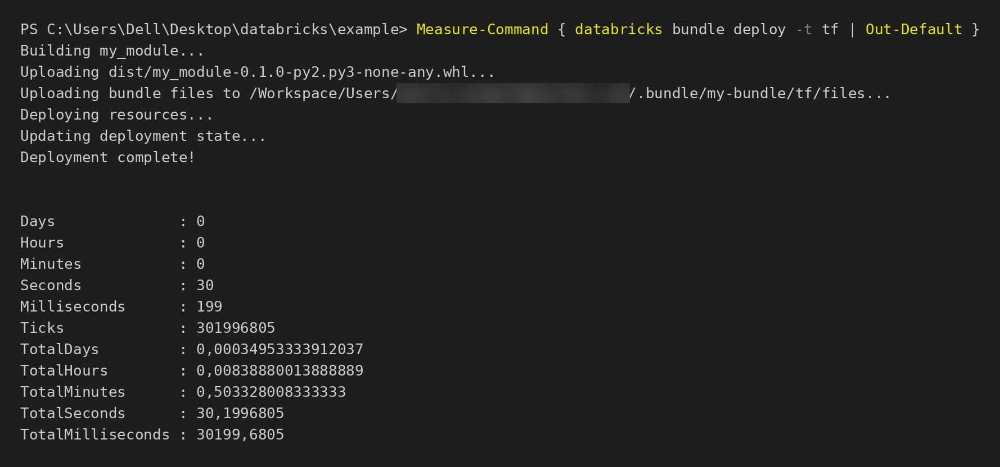
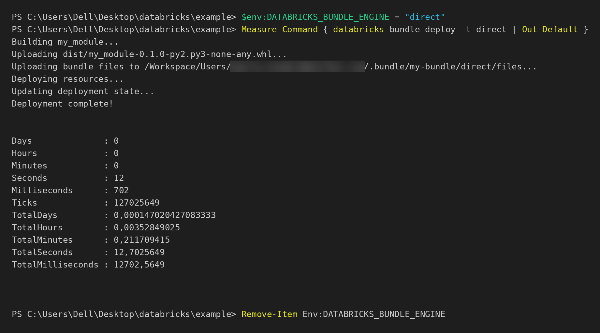
The first deploy took 30 s for tf and 12 s for direct. That's not quite fair, because the first tf deploy also downloads Terraform and the provider. So I ran a second deploy with no changes: 17 s vs 11 s. That points in the same direction as the "up to 40%" Databricks mentions, but two runs are not enough to say how large the difference really is.
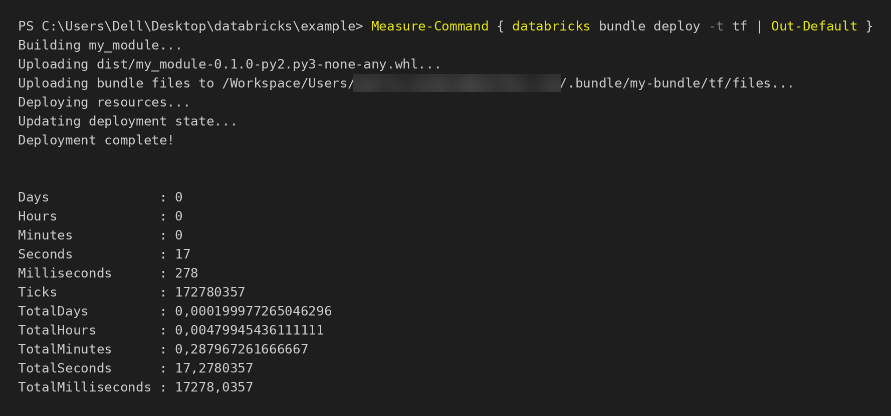
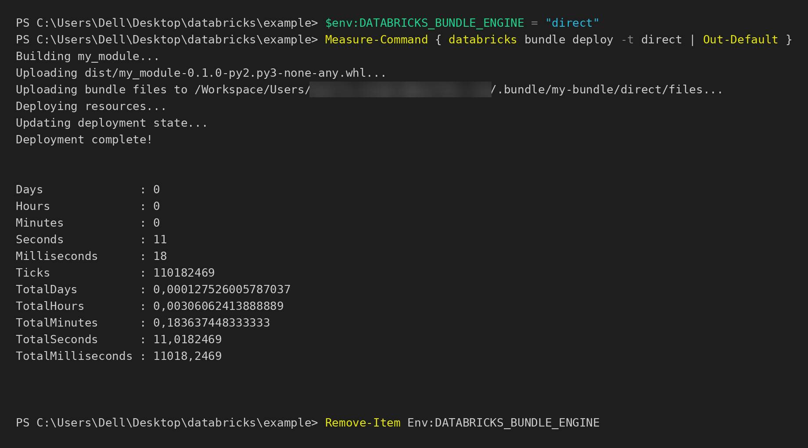
During that no-change deploy, my first try with the Terraform engine failed before it touched anything: terraform init couldn't reach registry.terraform.io. The provider was already on my disk, and the lock file pinned its exact version, but Terraform still went to the registry. The second try worked. So the Terraform engine needs the internet on every deploy, not only the first one. The direct engine never talks to the Terraform registry at all.
The deploy created two folders in my project: the hidden .databricks/ folder with the CLI's working data, and dist/, where the built wheel lands by default. The CLI puts a .gitignore file in both folders, so Git ignores them. That's a sensible default for real projects, but here I want to see every change, so I deleted both files. (Don't do this in your real project.)
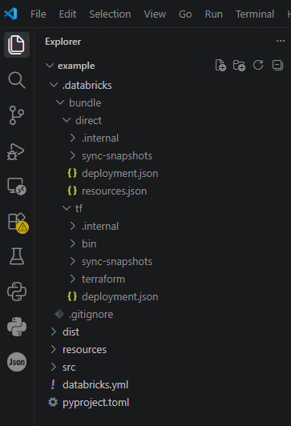
What each engine created:
deployment.json (both engines): deployment bookkeeping, with the CLI version, a timestamp and the local files included in the bundlesync-snapshots/ (both engines): snapshot used by file synchronizationbin/terraform.exe (tf only): Terraform, downloaded for this bundleterraform/ (tf only): generated Terraform config (bundle.tf.json), plan and terraform.tfstateresources.json (direct only): deployment state fileBoth engines deployed the same job, so I expected the state to look similar, but the two files have little in common.
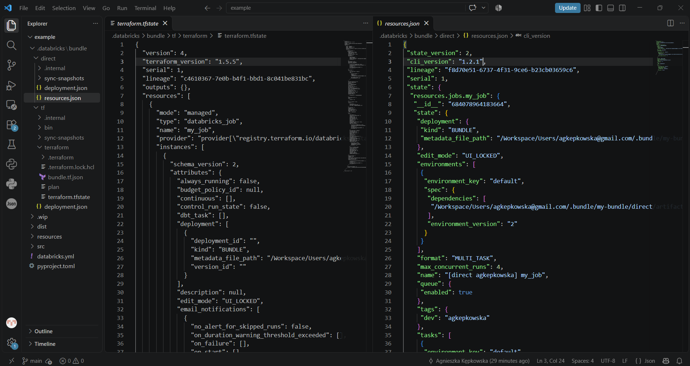
Some quick numbers: for one tiny job, terraform.tfstate has 183 lines, and the direct engine's state file, resources.json, has 48.
dbt_task: [], budget_policy_id: null…), plus what the API returned (id, url, run_as, provider_config). It also has a private base64 blob, which decodes to timeouts and the schema version.deployment block, edit_mode: UI_LOCKED, queue, format: MULTI_TASK, the dev tag and max_concurrent_runs: 4. What it doesn't have: empty fields, the URL, or run_as.max_concurrent_runs anywhere. That 4 and the dev tag come from mode: development, and they're in the Terraform state too.my_job appears in both, but in a different shape. In terraform.tfstate, the job is a resource with "type": "databricks_job" and "name": "my_job", and its ID is one attribute among many. In resources.json, the key is the full bundle path resources.jobs.my_job (the same path you use in ${resources.jobs.my_job.id}), and the ID sits next to the config as __id__.This matches what the Databricks documentation says: Terraform keeps a single state that mixes your local configuration with the remote state, while the direct engine records only your local configuration. With one nuance: "local configuration" means the configuration after the CLI has processed it, not literally my YAML file. The values from mode: development are in there too, but nothing the API returned except the ID.
The bundle files and the wheel were uploaded to .bundle/my-bundle/<target>/ in my user folder, one folder per target. And both jobs showed up in the workspace: [tf agkepkowska] my_job and [direct agkepkowska] my_job.
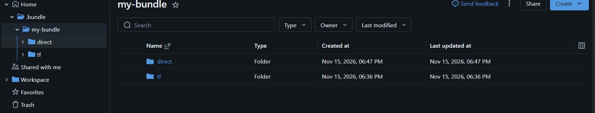
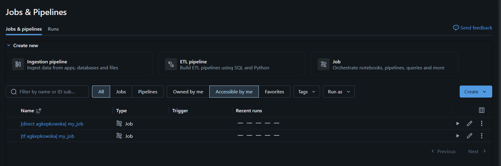
For tf, the state folder contains three files. terraform.tfstate and deployment.json are copies of the local files. metadata.json is new: the CLI writes it after a successful deployment, with a summary of what was deployed. It gives the deployment its identity, and together with terraform.tfstate, it lets the next deploy update only what changed.
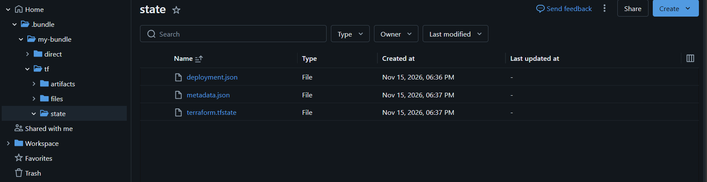
For direct, the state folder also contains three files. Two of them are the same as in the tf folder: deployment.json and metadata.json. terraform.tfstate is replaced with resources.json.
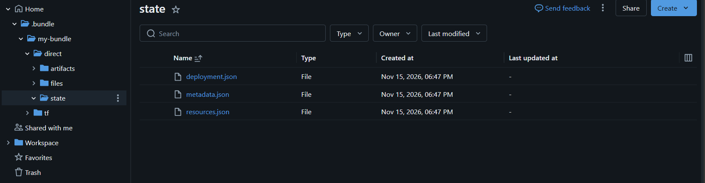
The remote copy matters because a deploy from another machine or from a CI pipeline can pick up the state from the workspace. Your local .databricks/ folder isn't the only source of truth.
Finally, I compared the two deployed jobs with databricks jobs get. They're identical. The only differences are the ones that have to be there: job_id, created_time, the name prefix, and the two workspace paths that contain the target name (metadata_file_path and the wheel dependency). Everything else matches, including edit_mode, format, queue, max_concurrent_runs: 4 and the task itself. So the workspace sees the same job. The difference is only in what each engine remembers.
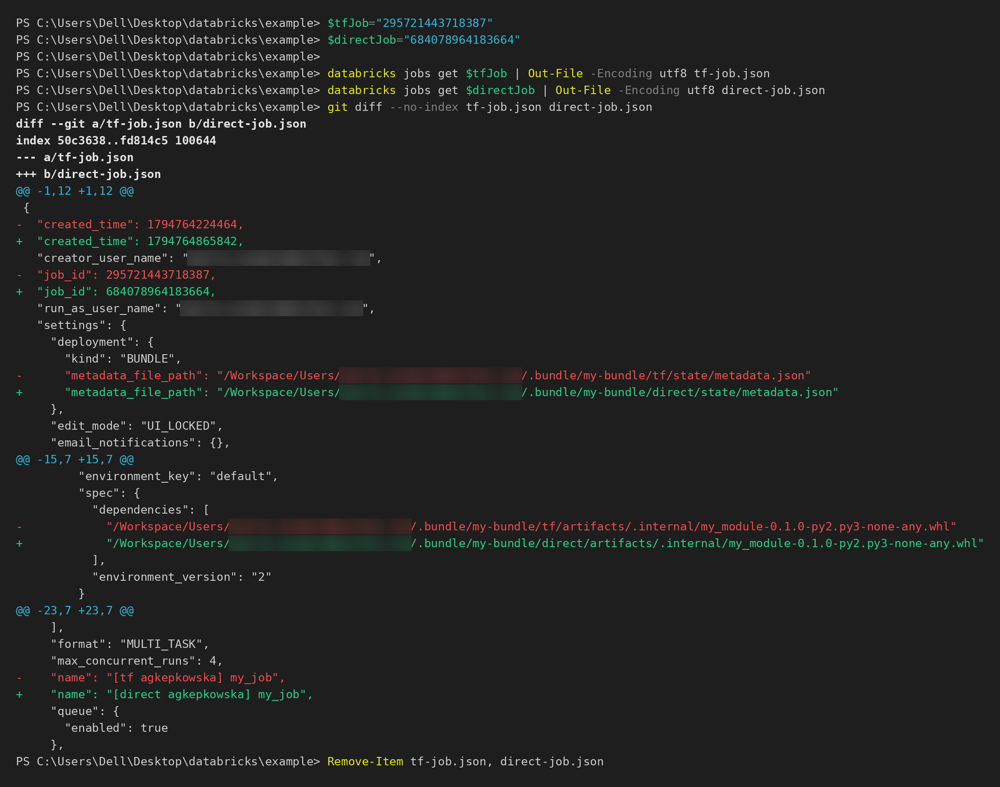
terraform/terraform.tfstate. Direct engine: resources.json.run_as. Direct engine: the job as the CLI sends it to the API, plus the job ID.terraform.tfstate, deployment.json, metadata.json. Direct engine: resources.json, deployment.json, metadata.json.So far, both jobs look the same in the workspace.
This is the experiment I was most curious about. The Databricks documentation says the two engines handle a removed setting differently:
With the Terraform engine, removing a set field from your databricks.yml leaves the corresponding value unchanged in the platform. […] With the direct engine, removing a set field from your databricks.yml reverts the value to the resource's default.
— Databricks docs: Migrate to the direct deployment engine
This kind of change doesn't break anything loudly. A job just starts behaving differently.
I tested this with timeout_seconds. Development mode doesn't touch it (unlike max_concurrent_runs, which it already sets to 4), and its default is 0, which means no timeout.
I had to run this experiment twice, with two different fields, before I saw the difference the docs describe.
Before starting, I committed everything from the first deploy, so each of the following steps has its own commit.
I added one line to resources/my_job.yml:
https://gist.github.com/agmorka/bb93bde7b70e843186cb35c0c0b58d21
Then I deployed both targets and checked the jobs ($tfJob and $directJob hold the two job IDs, which bundle summary prints):
https://gist.github.com/agmorka/089d43a96090762fb090629c2a20cde6
Adding a field works the same way on both engines, so nothing surprising here. In the state files, timeout_seconds changed from 0 to 3600 in terraform.tfstate, and a new timeout_seconds line appeared in resources.json.
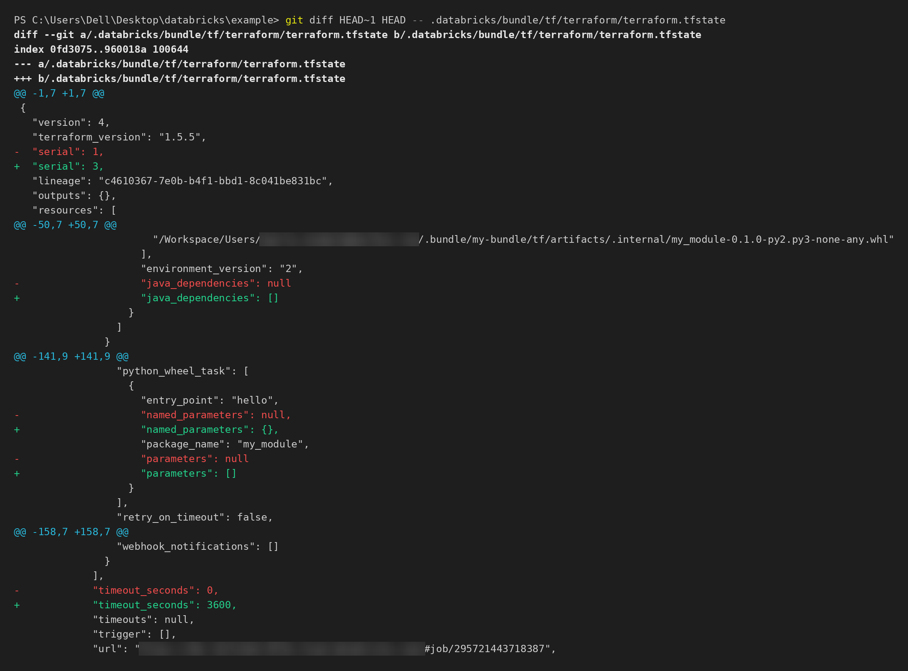
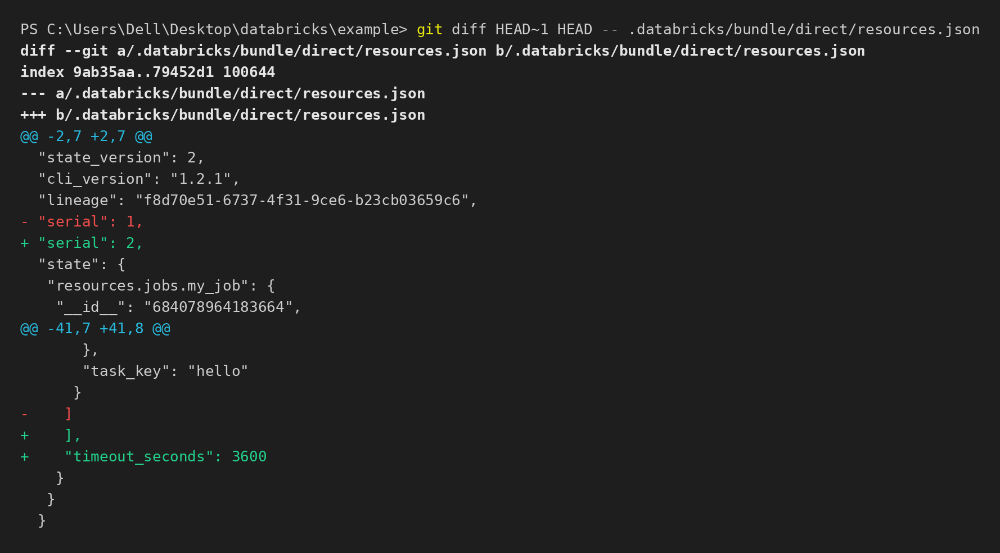
The direct engine's diff is what I expected: one new line, "timeout_seconds": 3600, and serial going from 1 to 2. The Terraform diff is busier. It contains three kinds of changes, and only one of them is mine.
timeout_seconds went from 0 to 3600. Terraform already stored the default 0 before, even though I never wrote it, so it shows up as a changed value, not a new line.java_dependencies went from null to [], named_parameters from null to {}, and parameters from null to []. Nothing changed in the workspace here: these are just different ways of saying "empty". After the update, the provider read the job back from the API and stored those empty values in a slightly different form than after the first deploy. Terraform's state reflects the provider's view of the job, not my configuration, so it can change in places I never touched.serial jumped from 1 to 3, although I deployed only once. It isn't a deploy counter: it goes up every time Terraform saves a new version of the state, and this deploy saved it twice. The deploy counter is seq in deployment.json, and it went from 2 to 3.The direct engine's state changes only where my configuration changed. Terraform's state also changes in places I didn't touch.
Then I deleted the line with the extra setting. Before deploying, I asked each engine what it was going to do:
https://gist.github.com/agmorka/36382a2a74371aa02aa5b21b9d0c9f0a
The tf plan does report a change: an update of my_job. And that was the first surprise of this experiment, because according to the docs, the Terraform engine should leave a removed field alone.
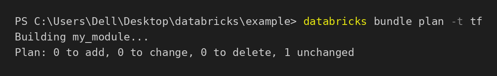
The CLI regenerates bundle.tf.json from my bundle before every plan, and timeout_seconds is gone from it now.
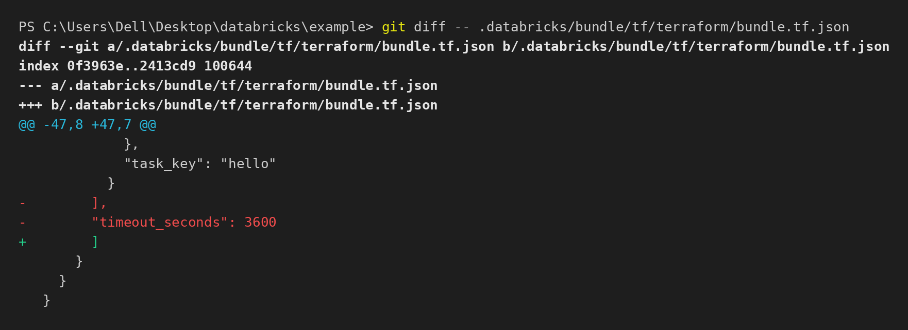
Terraform compares that config with its state, which still says 3600. To see the result, I looked into the plan file Terraform saves in .databricks/bundle/tf/terraform/plan. It's a zip archive with a binary plan inside, so not something you open in a text editor, but the Terraform binary the CLI downloaded can print it with terraform show plan. It plans one change: timeout_seconds from 3600 to null. So Terraform plans to remove the timeout.
The direct plan reports the same thing: update jobs.my_job, one resource to change. But with -o json, it also explains why, field by field, and no decoding is needed. The changes block lists every field where something differs, with what the engine is going to do about it:
timeout_seconds: "action": "update", with "old": 3600 (what the last deploy recorded in resources.json) and "remote": 3600 (what the workspace has right now). There's no new value, because my config doesn't have the field any more. The job goes back to the default.email_notifications, webhook_notifications, the task's disabled and its own timeout_seconds: 0 are skipped as "empty": the workspace returns them, but they're empty, so there's nothing to change. The task's run_if: ALL_SUCCESS is skipped as "backend_default": a value the API fills in by itself.The plan puts three things next to each other: old is the snapshot from the last deploy, remote is what the API returns now, and new_state is my current configuration. So the direct engine does see all the defaults the API returns. It just doesn't store them, and it knows which ones to ignore.
So both engines plan the same thing for this field: remove the timeout. The difference is how much they tell you. The direct engine explains its plan in readable JSON. The detailed Terraform plan isn't plain text, so to read it you need Terraform's own helper command: terraform show plan.
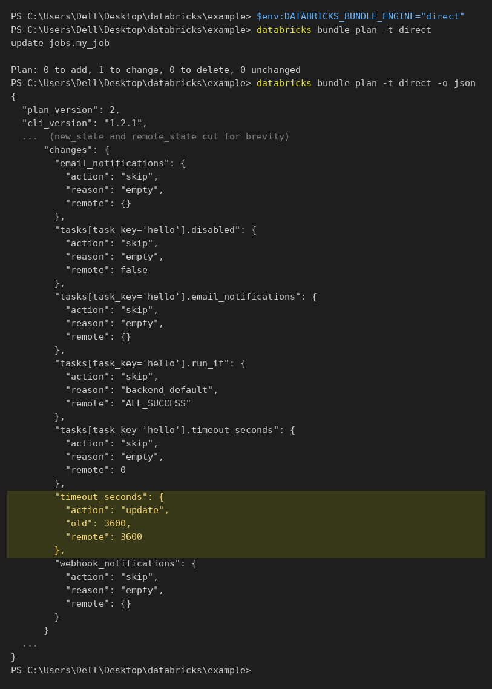
Then I deployed both targets and checked the jobs again.
Both jobs came back with timeout_seconds: 0, which means no timeout. The Terraform engine didn't keep the old value, although the docs say it should. It did what its plan said and removed the timeout, just like the direct engine. For this field, in my test with CLI 1.2.1, both engines behave the same. (Each job shows two timeout_seconds lines: the more indented one is the task's own timeout, the other one is the job-level setting I changed.)
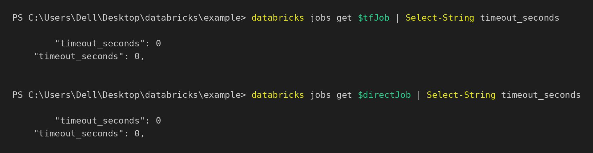
The state files agree with the workspace. In terraform.tfstate, timeout_seconds went from 3600 back to 0, and serial jumped by two again, from 3 to 5. In resources.json, the timeout_seconds line is gone, and serial went from 2 to 3.
So both engines removed the timeout, each by comparing my new config with what it remembered. That didn't explain the sentence about the Terraform engine in the docs, so I ran a second experiment.
My guess was that it depends on the field. Terraform doesn't treat every field the same way. The provider's schema marks some fields as optional + computed: the API may fill them in by itself, so when such a field is missing from the config, Terraform reads that as "keep whatever is there", not as "remove it". timeout_seconds isn't one of them. It's a plain optional field: only my config sets it, so removing it is a change.
I didn't want to guess which fields are computed, and I didn't have to. The Terraform engine had already downloaded the provider, and Terraform can print its schema without going to the internet:
https://gist.github.com/agmorka/2be10413e91c2e6af1c6a5151cb5b63d
For databricks_job, the list is short. At the top level of the job, only two fields are optional + computed: format and id. The CLI always sets format itself, and id is the job ID, so I can't add and remove either of them. Inside a task, there are a few more, but most of them belong to classic clusters (node_type_id, enable_elastic_disk…) or JAR tasks. The one left for my serverless wheel task is retry_on_timeout. Its default is false, so I set it to true on the task:
https://gist.github.com/agmorka/f777b045eaf55742306d98f07f439b95
Adding it worked the same way on both engines again. Both jobs got true, retry_on_timeout changed from false to true in terraform.tfstate, and a new line appeared in resources.json.
Then I removed it and asked both engines for a plan. This time, they differ. The CLI removed the field from bundle.tf.json, like before, but Terraform says there's nothing to change. The direct engine plans an update of the job.
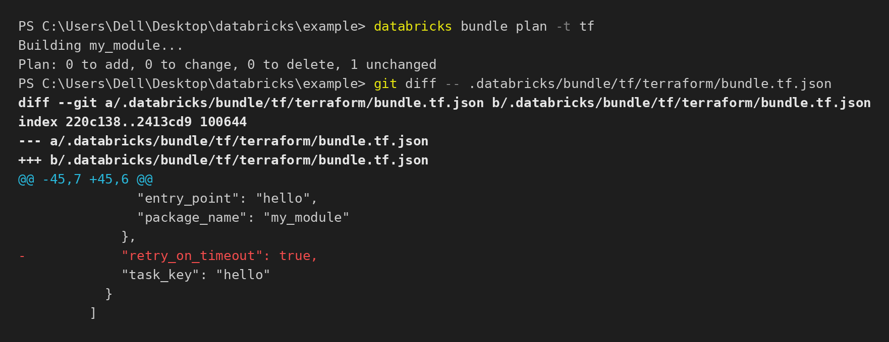
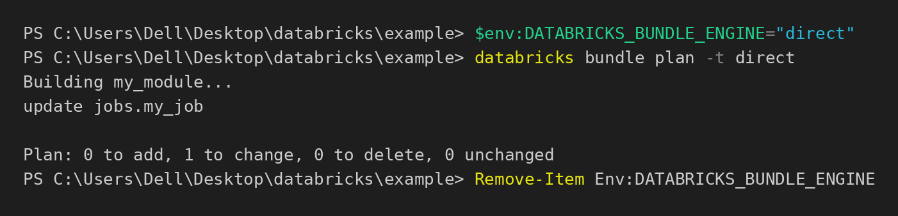
The tf job still has retry_on_timeout: true. The direct job doesn't show the field at all, because jobs get leaves out fields that are at their default, so it's back to false. The state files show the same thing. The Terraform engine didn't touch terraform.tfstate at all during this deploy, so it still says true. In resources.json, the retry_on_timeout line is gone.
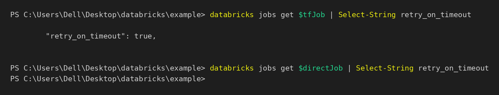
So the docs are right, but only for some fields. For a plain optional field, like timeout_seconds, both engines remove it. For a field Terraform treats as computed, like retry_on_timeout, only the direct engine does. And in a job, almost every setting is the first kind.
Look at my tf job now. The bundle says nothing about retry_on_timeout, the workspace says true, and everything works. Imagine a cleanup PR removed that line a year ago as "unused". On the Terraform engine, nothing happens. After the migration, the first deploy on the direct engine sends that value back to its default, with no error.
The plan shows this in advance. Before migrating, run bundle plan with the direct engine and look closely at every update you didn't expect. The JSON plan names the exact field. And the practical advice from the Databricks docs still holds: if you rely on a value, set it explicitly in your configuration. Don't rely on what was deployed before.
In the next section, I upgrade the CLI and migrate the tf target, starting with the job that still has retry_on_timeout: true.
So far, everything ran on CLI 1.2.1. Now it's time for the step my team has to take anyway: upgrade the CLI and move the tf target to the direct engine. The direct target is my control group. It has used the direct engine from the start, so after the migration, both targets should look the same.
I upgraded the CLI from 1.2.1 to 1.26.0.
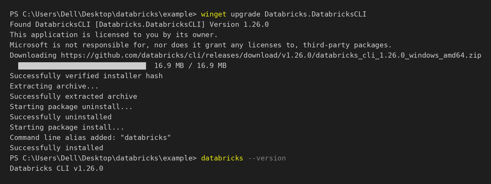
Remember the timeline from the beginning: from 1.14, the CLI migrates Terraform-engine bundles automatically on deploy, and from 1.20, the Terraform engine is gone. With a new CLI, the next deploy of the tf target would migrate it whether I wanted it or not. I didn't want the migration to happen as a side effect, so I did it step by step, the way the docs describe.
https://gist.github.com/agmorka/bd51bd16736ca7157edb1a3e29ee4170
This command converts terraform.tfstate into the direct engine's state file, resources.json. It works only on my machine: nothing changes in the workspace until the next deploy.
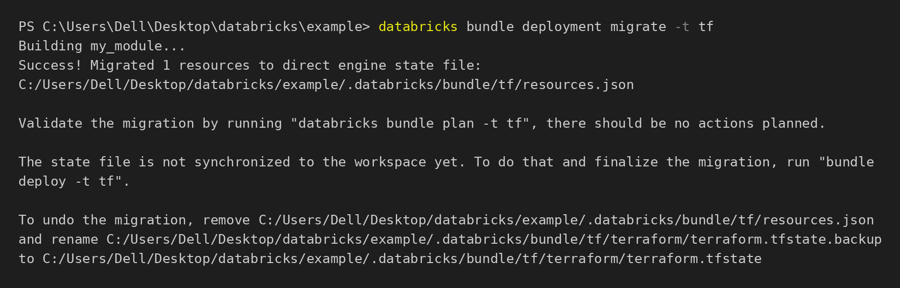
The migration changed two things in .databricks/bundle/tf/. There's a new resources.json, the same kind of state file the direct target has had from the start. And terraform.tfstate is gone: the CLI renamed it to terraform.tfstate.backup, replacing the backup Terraform keeps from its previous run. That backup is how you undo the migration, and the CLI even prints the exact steps. Everything else stayed where it was: the terraform/ folder with bundle.tf.json and the provider, and the Terraform binary in bin/. Nothing removed them.
The new resources.json has 48 lines, the same as the one in the direct target. And one thing is missing from it: retry_on_timeout. The docs say migrate reads IDs from the existing deployment, and that's what it did. It took the job ID from Terraform and built the rest from my current configuration. The true stored in terraform.tfstate didn't make it into the new file.
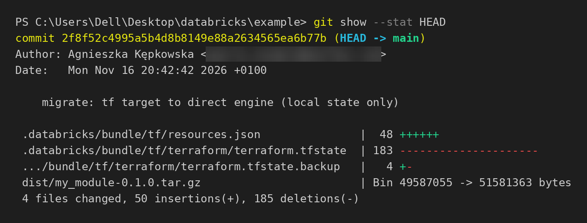
Now I have two resources.json files for the same job: one created by the migration, and one the direct engine has kept since the first deploy. Comparing them shows what the migration carried over from Terraform.
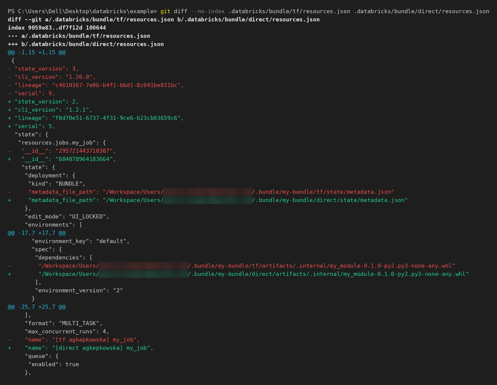
The job itself is the same in both files. They differ only where they have to: the job ID, the name prefix and the two paths with the target name. So after the migration, the direct engine remembers my tf job the same way as the job it has managed from the start. Including the missing retry_on_timeout, as I noticed in the previous step.
The top of the file is different:
lineage is the same ID as in terraform.tfstate. The migration didn't start a new state, it continued the history of the Terraform one.serial is 9, so it continues Terraform's counter instead of starting from 1.state_version is 3, and cli_version is 1.26.0. The direct file still says 2 and 1.2.1, because I haven't deployed it with the new CLI yet. The new CLI writes a newer version of the state format.According to the docs, bundle plan after the migration should succeed and show no changes. The docs also warn that it may show some changes anyway, because the old Terraform state contains fields the platform filled in after deployment. Those differences are harmless and disappear after the next deploy.
My guess was that this plan wouldn't be empty, because of retry_on_timeout: the bundle doesn't have it, and the workspace still says true.
And it wasn't. The output of migrate itself says there should be no actions planned, but the plan shows one: update jobs.my_job. The plain text doesn't say why, so I saved the JSON plan and searched it for retry_on_timeout. It shows up twice. First in the job as it is now in the workspace, with "retry_on_timeout": true. And then in the list of changes, as the reason for the update: tasks[task_key='hello'].retry_on_timeout with "action": "update" and "remote": true.
There's no old value, because the migrated snapshot doesn't have the field, and no new value, because my config doesn't have it either. The direct engine compares the workspace (true) with what it expects (nothing, which means the default) and plans to bring the job back to false.
This difference isn't harmless: it changes how the job behaves. In a real bundle with dozens of jobs, it would be one more update line among many, easy to wave through. Only the JSON plan tells you which field it is.
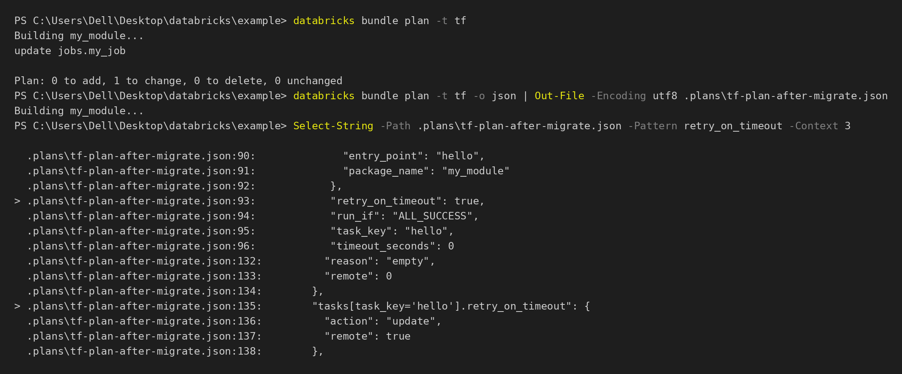
The last step makes the migration final: the deploy writes the new state to the workspace.
The deploy did what the plan said. The log shows one line about my job, Updated jobs.my_job, and nothing else: no warning, and no word about which field changed. Then I checked the job, and retry_on_timeout is gone. It's back to false, the default.
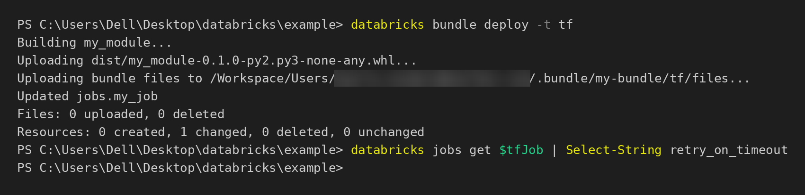
The deploy also finished the migration in the workspace. The remote state folder of the tf target now has resources.json, and terraform.tfstate is gone. In its place there's terraform.tfstate.backup, the same rename migrate did on my machine. metadata.json and deployment.json are still there. The tf folder now looks like the direct one, plus the backup.
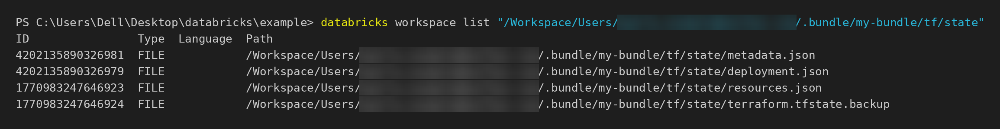
Migrating one target took me around 5 minutes, including double-checking everything. So the effort is small, and the only risk I found is the silent reset. After this experiment, this is my list:
migrate on its own and commit the result. Until the next deploy, nothing has changed in the workspace, and terraform.tfstate.backup is your way back.bundle plan -o json and explain every update before you deploy. A field with a remote value but no old one is a value that only the workspace remembers, like my retry_on_timeout. The deploy will reset it to the default.jobs get, not only the deploy log. The log says Updated, but not what changed.So what actually changes with the migration, and what can break?
retry_on_timeout.If you're about to migrate, start with the checklist above.
I tested this with Databricks CLI 1.2.1 and 1.26.0, Terraform 1.5.5 and the Databricks Terraform provider 1.117.0, on Databricks Free, in November 2026. The engines are still changing, so check your own versions. (And the product name, just in case.)